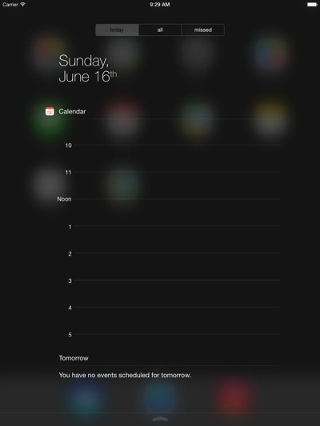

Mon, 17 Jun 2013 08:30:23 ·
erste bilder so sieht ios 7 auf dem ipad aus

Erste Bilder: So sieht iOS 7 auf dem iPad aus
Philipp Tusch, apfelpage.deAuf der WWDC 2013 hat Apple iOS 7 lediglich auf dem iPhone gezeigt. Auch die am gleichen Tag veröffentlichte Beta gab es nur für das iHandy. Während iPad-Nutzer gespannt warten, hat Sonny Dickson jetzt bereits erste Screenshots veröffentlicht, die…
Sneak peak… #iOS7 on iPad